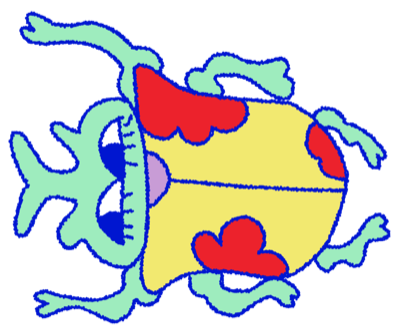
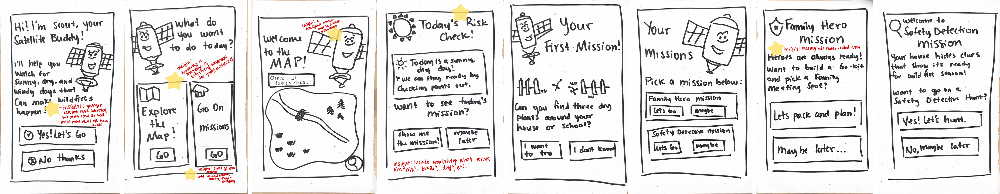

Speaking with children allowed us to confirm that they are often forgotten about in conversations relating to disaster preparation, and it was a reminder that design is a mode to increase access to those who need it.
Created a gamified learning platform concept to teach young children about wildfire risks and preparedness in order to loop them into the conversation about natural disasters at an early age through a design challenge. Our concept won first place!

This concept was created during a design challenge hosted by the UCSD Design Lab, San Diego Gas & Electric, and the San Diego Supercomputer Center. The problem statement given to us was: “How might we design more effective ways to communicate dynamic, evolving wildfire risks to the people who need to understand and respond to them, including residents, first responders, and elected officials, before, during, and after a wildfire event?” Our challenge was to design a concept for communicating these risks, which could take many forms, from an app to a public information campaign to a real-time alert system.
We started by mapping out possible audiences: residents, the elderly, and children. To narrow that down, we talked to four stakeholders, three from WiFire and one homeowner directly affected by the Palisades fires.
A few themes came up again and again:
That last theme is what pointed us toward children, and we tested this direction with five elementary-aged kids, and the conversations confirmed that schools weren't really preparing them for wildfires. Kids trusted parents, teachers, and officials as their main sources of information, and most of them had very little basic knowledge about fire at all. From there, we landed on our target audience: children in grades K-3 across California.
Problem Statement: How might we empower children in grades K-3 to understand, engage with, and remember wildfire preparedness, while also helping them spread that awareness within their own families?
We built Fireflies, an interactive, gamified learning platform that teaches kids in grades K-3 about wildfire preparedness in a way that feels approachable rather than scary. The goal is to help kids feel capable of supporting their families in an emergency, while also giving them tools to process the fear and stress that come with it. Because kids bring what they learn home, the platform's impact reaches beyond the individual learner, making it useful both inside and outside the classroom.
We mapped out potential solutions on an assumptions chart, weighing impact against how well each idea was backed by our research, then narrowed our shortlist down across three stages: in-school assemblies, at-home family games, and student-led community events. We landed on gamified learning, since research on childhood learning shows it boosts both engagement and retention for young audiences, and kids that age tend to be more curious and open to new information than adults. Furthermore, children act as a bridge into their households, bringing home what they learn and influencing how their families behave. Just as parents shape their kids, kids shape their parents right back, so teaching wildfire preparedness at this age has the potential to improve how entire families prepare.
First, we storyboard-tested the concept with Tolga Caglar, a computational data science researcher and father, before building anything.
Next, we focused on testing preliminary interest rather than full game flow by creating a paper prototype and conducting interviews with 4 children and 5 adults.
Winning first place earned us the chance to keep developing this concept through an internship with the Societal Computing and Innovation Lab at the San Diego Supercomputer Center.

Speaking with children allowed us to confirm that they are often forgotten about in conversations relating to disaster preparation, and it was a reminder that design is a mode to increase access to those who need it.

Working with children and parents through the ideating process also made it easier to narrow down a concept, showing me codesigning is a valuable way to produce products.